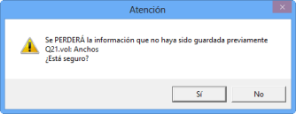
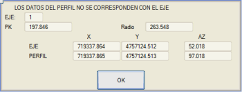
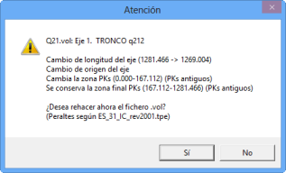
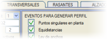
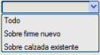
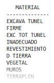

Profillerin Oluşturulmasını İzle
|
Bu kutucuk etkinleştirildiğinde, program hesaplama yapıldığında profilleri ekranda göstermesini belirtir.
|
G.P. Modellerini Göster
|
Enkesit Tasarımı alt menülerine girildiğinde farklı modelleri göstermeyi sağlar (genişlikler, deverler, orta refüj modeli...).
|
| Kavşak Kolunu Göster |
Kavşak kolunun karakteristik noktalarını görmeyi sağlar.
|
| Kavşakları Göster |
Oluşturulan kurp güzergahlarının eksenlerini görmeyi sağlar. Enkesit Tasarımı'nın güzergah numarasını dinamik olarak görmemizi sağlayan No'yu Gör kutucuğuna benzer.
|
| Düz Üçgenleri Temizle |
Kavşak veya döner kavşaklardaki kurplar gibi enkesitleri elde etmek için otomatik üçgenlemeler yaparken düz üçgenleri temizlemek için kullanılır.
|
| Otomatik ISPOL Kaydı |
Eğer bu araç etkinleştirilmezse, bir güzergahın enkesit tasarımı değiştirildiğinde ve başka bir güzergaha geçildiğinde, program daha önce yapılan değişiklikleri kaydetmediysem beni uyarır. Bu kutucuk etkinleştirilmişse, kullanıcıya önceden haber vermeden her güzergah değiştirdiğimde otomatik bir kayıt yapar.

Kutucuk etkin olmadığında programın sunduğu uyarı
|
Profillerin X,Y,AZİMUT Değerlerini Kontrol Et
|
Hesaplama yaparken, hesapladığımız güzergahın enkesitlerinin X,Y, Azimut koordinatlarının güzergahın kendisiyle eşleşip eşleşmediğini kontrol eder. Eşleşmemesi durumunda bir uyarı gönderir.

|
Eğik Enkesitleri Dengele
|
Bu seçenek etkinleştirildiğinde, eğik profillerin kullanımına izin verilir. Profildeki eksene olan mesafeler eğiklik nedeniyle daha büyük olsa da, alanların ölçümü profilin eksene dik bir düzleme yansıtılmasıyla yapılır. Profil editöründen Alanlar simgesi  ile hesaplandığında, hesaplanan indirgenmiş alanlar temsil edilir. ile hesaplandığında, hesaplanan indirgenmiş alanlar temsil edilir.
|
.vol'deki Güzergahı Kontrol Et
|
.vol dosyasındaki Plan tanımını, eşleştiğini doğrulamak için kontrol eder. Eşleşmezse ekranda bir uyarı gösterir.

|
.vol Yazılırken Kontrol Et
|
.vol dosyasını yazmadan önce, verilerin mevcut güzergaha karşılık geldiğini kontrol eder, böylece bir güzergahın .vol dosyasının başka bir güzergahın verileriyle üzerine yazılmasını önler.
|
Çıkarken <Değişiklikleri kaydet...> varsayılan olarak etkinleştir
|
Kullanıcının, programdan çıktığında, .vol dosyasına değişiklikleri kaydetme seçeneğinin varsayılan olarak etkinleştirilmesini sağlar.
|
Enkesit Hesaplanırken Z -> L53
|
Enkesit tasarımı her hesaplandığında, planda çizilen güzergaha profil kotunu vermek için Z -> L53 aracını çalıştıracaktır.
|
Kırık noktalarda enkesiti güzergah açıortayında oluştur
|
Bu seçenek etkinleştirildiğinde, kırık noktalı güzergahlarda (özellikle boru hatlarında) arazi profilleri kesilirken ve plandaki tekil noktaların olayı etkinleştirildiğinde, kırık noktada bir profil oluşturulur, ancak önceki ve sonraki arasındaki ara azimutla. Yani, bir eğiklik=(azimut artışı)/2 ile. Bu KM'de oluşturulan kesit, bir değer=(1/cos(eğiklik)) kadar genişletilmiş görünür. Alan ölçümleri normal kesite karşılık gelenlerdir.
|
İş sınırı noktasını arazi yüzeyine ekle
|
ISPOLn.per dosyalarının arazi yüzeyine iş sınırı noktasını (dolgu eteği veya yarma başı) ekler. Programın güzergahlar arası üçgenlemeleri daha detaylı yapabilmesi için Kavşak Kolu Ekle hesaplamalarında bu kutucuğun etkinleştirilmesi ilginçtir.
|
Yapıştırma (serim) metrajını taban yüzeyine göre ölç
|
Yapıştırma ölçümünün nasıl tanımlanacağını seçer: katmanın tepe yüzeyine göre veya bu yapılandırmayı etkinleştirme durumunda taban yüzeyine göre. Bu tercihler, Listeler > Üstyapı Serim Alanları menüsünde tanımlanabilir.
Bu aracı etkinleştirirsek, yapıştırmayı katmanın Tümü boyunca, sadece yeni üstyapı üzerine dayanan kısmı veya sadece mevcut kaplama üzerine dayanan kısmı ölçebiliriz, bu da genişletme ve iyileştirme projelerinde çok kullanışlıdır.
Eğer yapıştırma metrajını taban yüzeyine göre ölçmeyi etkinleştirmişsek, o zaman üstyapı katmanlarını yeniden hacimlendirirken, toplam yapıştırma yüzeyi özellik olarak aktarılır ve ardından Yeni üstyapı üzerine yapıştırma ve Mevcut kaplama üzerine yapıştırma olarak ayrıştırılır.
|
Metraj adlarında boşluk kullanma
|
Bu seçenek etkinleştirildiğinde, metraj adları boşluk yerine alt çizgi kullanır, bu da hesap tablolarına dışa aktarılmaları için kullanışlı olabilir.

Kutucuk etkinleştirilmemiş cvoln.res listesi
|

Kutucuk etkinleştirilmiş cvoln.res listesi
|
|
ISPOL4.dar tablosunu kullan
|
Bu kutucuğu etkinleştirerek, boru hattı güzergahları ve karayolları veya demiryolları gibi diğer kesit türlerini içeren projelerde ortak metrajlar yapabiliriz.
|
| Kısa menü |
Enkesit Tasarımı menüsünün daraltılmış görünümünü kullanır.
|
GENİŞLETME VE İYİLEŞTİRME: Kısa menü
|
Genişletme ve İyileştirme menüsünün daraltılmış görünümünü kullanır.
|
Deverler: İşaret Kuralı
|
Deverleri tanımlamak için kullanılacak işaret kriterini seçer.
|
Kurplar modeli miras alır
|
Kavşak ve döner kavşak kurp güzergahlarının eksenleri planda çizildiğinde, Proje hesaplamasından (.lil moduna göre), tanımlandıkları güzergahın modelinde bunu yaparlar.
|
| Varsayılan kamulaştırma sınırı |
ISPOLn.per profillerine, dolgu eteğinden veya yarma başından itibaren varsayılan olarak verdiğimiz arazi payını tanımlar. Kamulaştırma sınırını aralıklara bölmek için, Kamulaştırma Sınırı adlı Enkesit Tasarımı alt menüsünden tanımlanabilir.
|
Boyuna veya enine profil pafta şeridinin düşey kullanımı
|
Enkesitleri, boyuna profilleri çizdiğimizde aynı şeritte çizilmemeleri için varsayılan olarak bir fazla değer tanımlanmıştır. 1 değeri konulursa, hepsi aynı şeritte, birbiri ardına çizilir. |
| Profillerin ayrım faktörü | Enkesitlerin ve boyuna profillerin çizimi için ayrımı tanımlar. |
| Yarma/dolgu için tamamlayıcı yüzey oluştur |
Bu araç, yarma profillerinde dolgu kesitinin ilk metresiyle bir yüzey oluşturur ve dolgu profillerine hendek ve yarmadaki ilk metreyle bir yüzey ekler. Bu yeni yüzey (L323), hesaplandıktan sonra ISPOLn.per dosyalarında görünecektir. Bu yüzeyi, arazide teorik araziden farklı profillerle karşılaşan makineler için LandXML veya SC1 olarak dışa aktarabiliriz.
|
Hesaplamada sınır çizgilerine göre kırp
|
Bu kutucuk etkinleştirildiğinde, Enkesit Tasarımı'nda hesaplama sırasında Proje sekmesinde tanımlanan sınır çizgileri dosyasıyla profiller kırpılır. Kırpılmış kesit, Enkesit penceresinde de gösterilecektir.
Bu seçenek, proje sınır çizgileri dosyasını içermesinin yanı sıra, sanat yapılarının ve eksenler arası duvarların sınır çizgilerini de içerir.
Enkesit Tasarımı'nda hesaplama yaparken ve planı çizerken, hesaplamada [Sınır çizgileriyle kırp] seçeneği etkinleştirilmedikçe, yaklaşım dolguları sınır çizgileriyle kırpılmaz. Projeden veya Enkesit Tasarımı'ndan [Mevcut Projeyi Hesapla] seçeneğiyle hesaplama yapıldığında, kırpılacaktır.
|
| Eksik kavşak bölgelerinde Yol Çizgilerini Kırpma |
Örneğin, sadece bir DA kurpu ile bir kavşak yapmışsak ve IA= -1 koymamışsak, Kavşak Kolunun solundan Anayolun Yol Çizgilerini kırmasını istemiyorsak bu seçeneği etkinleştirebiliriz.
|
Kesişen profilleri kırp
|
Toprak işlerinin ulaşım mesafesi kurp yarıçapından büyük olduğunda bu aracı etkinleştirmek faydalıdır.
Eğer etkilenen bölgelerde sınır çizgileri de varsa, bu komutun daha sonra var olmayacak profil parçalarını kırmak için kullanmaması için Truncar por líneas de frontera en el cálculo seçeneğini de etkinleştirmek uygundur.
|
| Tüm yüzeyleri kırp |
Bu seçenek etkinleştirildiğinde, sınır çizgileriyle kırpma, ISPOL.per'in tüm yüzeylerini etkiler. Aynı anda Arazileri Kırp ve Tünel yüzeylerini Kırp'ı etkinleştirmeye eşdeğerdir.
|
Arazileri Sınır Çizgileriyle Kırp
|
Bu seçenek etkinleştirildiğinde, arazi yüzeyleri sınır çizgileriyle kırpılır. |
Tünel yüzeylerini kırp
|
Bu seçenek etkinleştirildiğinde, arazi yüzeyleri tünel yüzeyleriyle kırpılır.
|
Arazi profillerinin tutarlılığını kontrol et
|
Arazi profilleri birden fazla yüzeye sahip olduğunda (arazi, kaya, kaya2...), bu seçenek etkinleştirildiğinde, hesaplanan profiller (ISPOLn.per) için yüzeylerin göreli konumu analiz edilir ve düzeltilir. (örneğin kaya, arazi yüzeyinin üzerinden geçemez)
|
Dört görünümün yapılandırmasını kaydet
|
Enkesit Tasarımı > Yardımcı Programlar > 4 Görünüm'den elde edebileceğiniz görünümlerin yapılandırmasını kaydeder.
|
Arazi .per dosyasında gelen kaya profillerini uzatma
|
Kayanın son noktasından itibaren her şeyin üstteki malzeme (Sağlam Zemin) olduğunu varsayar. Bu, o noktada profili yeterli bir derinliğe kadar dikey olarak indirmeye ve ardından kesitten uzağa yatay olarak uzatmaya eşdeğerdir.
|
Arazi profillerini eğimle uzat
|
Bu seçenek, yatay olarak uzatmak yerine, son segmentin eğimiyle uzatır.
|
| Enterpole Edilmiş Profillerde Şakülden Sapmalar | Bu yüzeylerle kesiti gerçek zamanlı olarak haritadan çıkarmayı sağlar. Bu seçenek güzergahın hesaplanmasını yavaşlatabileceğinden, profil enterpolasyonu için olayları Enkesitler menüsündeki Olaylar'a geçirmek ve güzergah her yeniden hesaplandığında tekrar kesilmemeleri için tüm profilleri çıkarmak tavsiye edilir.
Şakülden sapmalı yüzeyi oluşturan nesneler birden fazla farklı yüzeyden (çizgi tipleri) oluşuyorsa, her çizgi tipi için farklı bir yüzey tanımlamak da daha verimlidir.
|
Profilde orijinal uzunluğu işaretle
|
Eğer bir profilin kamulaştırma sınırına ulaşmak için uzatılması gerekiyorsa, uzatıldığı noktada bir sembol (S809) belirir. Ve hesaplama yapıldığında, profilin uzatıldığı KM'leri ve tarafı içeren bir cortes_n.res listesi oluşturulur.
|
Profilin orijinal uzantısını koru
|
Etkinleştirilirse, kamulaştırma sınırı göz ardı edilir ve arazi profili kesildiği uzantıda bırakılır.
|
Menhollerde boru kesintisini devre dışı bırak
|
Etkinleştirilirse, ISPOL.per enkesitlerinde menholleri geçerken boruların kesintisi yansıtılmaz.
|
Herhangi bir güzergah pasifken APV'de normal travers kullan
|
Böylece, eğer kavşak kolu anayolda devre dışı bırakılmışsa, genişletilmiş traversler/uykular kullanılmaz ve normal olanlar yerleştirilmeye devam edilir. Eğer kavşak kolundaysak ve devre dışı bırakılan anayol ise, o zaman makas bölgesinde normal traversler yerleştirilir. (Seçenek seçilmemişse, bu durumda traversler/uykular çizilmezdi, çünkü makas bölgesinde anayola ait olurlardı).
|
| Her şeyi kamulaştırma sınırına göre kırp | Hesaplama yaparken, kamulaştırma sınırlarının dışındaki herhangi bir sembolü siler veya herhangi bir çizgiyi kırpar.
|
| Eksik hendeklerde temizlik palyesini kontrol et | Bu seçenek etkinleştirildiğinde, eğer dış temizlik palyesi tanımlanmışsa ve hendek son noktasından önce araziyi kesiyorsa, o zaman tam hendek çizilip temizlik palyesi eklenerek bu palyenin sonunun arazinin altında olup olmadığı kontrol edilir ve bu durumda ilgili temizlik yapılır. |
SIMBOLOS PERFIL tablosunu sınır çizgileriyle kontrol etme
|
Bu tabloda tanımlanan semboller, sınır çizgileri tarafından silinmez.
|


 Enkesit Tasarımı'na girildiğinde güzergahımız için kesit tipine karar vereceğiz: Karayolları, Demiryolları, Boru Hatları veya Limanlar.
Enkesit Tasarımı'na girildiğinde güzergahımız için kesit tipine karar vereceğiz: Karayolları, Demiryolları, Boru Hatları veya Limanlar. Varsayılan olarak bu menüye girildiğinde güzergahlarımız hacim hesaplama tablosu olarak ISPOL klasörünün kütüphanesinde bulunan ISPOL4.dar'ı kullanacaktır. Bu tablo her türlü kesit için geçerlidir: karayolları, demiryolları, boru hatları ve limanlar.
Varsayılan olarak bu menüye girildiğinde güzergahlarımız hacim hesaplama tablosu olarak ISPOL klasörünün kütüphanesinde bulunan ISPOL4.dar'ı kullanacaktır. Bu tablo her türlü kesit için geçerlidir: karayolları, demiryolları, boru hatları ve limanlar. simgesi aracılığıyla, güzergahın modeline ait herhangi bir çizgiye grafiksel olarak tıklayarak güzergah değiştirmek mümkündür.
simgesi aracılığıyla, güzergahın modeline ait herhangi bir çizgiye grafiksel olarak tıklayarak güzergah değiştirmek mümkündür. Enkesit Tasarımı menüsünün yapılandırmasını, ekranın sağ tarafında bulunan sabit menüden Seçenekler komutu aracılığıyla yapabiliriz.
Enkesit Tasarımı menüsünün yapılandırmasını, ekranın sağ tarafında bulunan sabit menüden Seçenekler komutu aracılığıyla yapabiliriz.